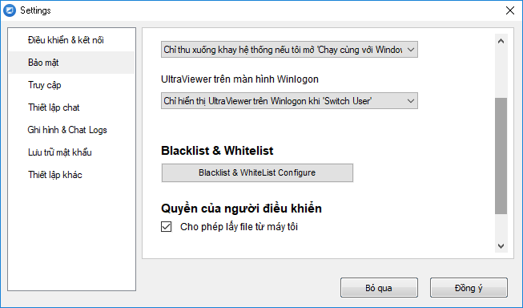

Tổng hợp các vấn đề bảo mật của UltraViewer
Bài viết dưới đây tổng hợp các thắc mắc về vấn đề bảo mật của UltraViewer, UltraViewer vẫn đang tiếp tục bổ sung các tính năng và thông tin liên quan được cập nhật trong hướng dẫn này:
Ký điện tử - Code Signing
Là một tính năng bảo mật bổ sung, tất cả các phần mềm của chúng tôi được ký điện tử thông qua Sectigo. Theo cách này, các file thực thi (EXE/Binary/Bộ cài) của phần mềm luôn dễ dàng nhận dạng có phải do đúng nhà sản xuất phát hành hay không. Nếu phần mềm đã được thay đổi sau đó, chữ ký số sẽ tự động trở thành không hợp lệ. Tránh các trường hợp hacker chèn mã độc vào phần mềm.
Chống dò mật khẩu
UltraViewer sử dụng cơ chế chống dò mật khẩu thông minh dựa trên máy tính bị tấn công, số lần đăng nhập sai và địa chỉ IP. Với các kịch bản được lên phương án như sau:
- Khi có ai đó đăng nhập sai mật khẩu vào máy tính bạn (hoặc các máy tính khác nhau) nhiều lần, hệ thống sẽ chặn IP & ID của người đó trong khoảng thời gian 15 phút, nếu sau khi hết 15 phút người đó tiếp tục nhập sai thêm một số lần, thời gian chặn sẽ được tăng thêm, như 15, 30 , 60 phút...
- Chống Botnet dò mật khẩu bằng nhiều IP: Khi có nhiều người cùng đăng nhập sai mật khẩu vào máy tính bạn nhiều lần trong vòng 24 tiếng qua, hệ thống sẽ nhận diện rằng máy tính bạn đang bị tấn công và đưa máy tính của bạn vào vùng an toàn hơn, các mức phạt sẽ được tăng nặng khi kẻ tấn công tiếp tục dò mật khẩu:
+ Số lần được phép gõ sai mật khẩu ít hơn nhiều.
+ Chặn với khoảng thời gian lâu hơn nhiều lần.
+ Kiểm tra IP đó trên database Blacklist quốc tế/ Proxy / Socks List để ngăn chặn.
+ Kiểm tra IP/ID đó dựa vào lịch sử đen nhiều ngày hoặc nhiều tháng trước đó trong quá khứ để ngăn chặn ngay.
+ 1 mã Captcha có thể được hiện lên làm kẻ tấn công gặp nhiều khó khăn.
+ Khóa mật khẩu ngẫu nhiên: 1 thông báo yêu cầu đối tác phải reset mật khẩu ngẫu nhiên để tiếp tục.
+ Và một số cơ chế bảo mật thêm riêng không được công bố để đảm bảo sự bảo mật của hệ thống.
Độ dài mật khẩu
- Độ dài mật khẩu ngẫu nhiên được tự động nâng lên 6 kí tự chữ lẫn số khi người dùng bật tính năng Khởi động cùng với Windows để đảm bảo việc dò mật khẩu với số lượng kết quả cần dò là 6^37 kí tự gần như là không thể khi kết hợp với phân lớp chống dò mật khẩu ở phía trên.
- Độ dài mật khẩu cố định được yêu cầu tối thiểu 8 kí tự, các mật khẩu dễ đoán như 1->8 sẽ bị chặn khỏi hệ thống nhằm ngăn chặn việc hacker thử đăng nhập vào nhiều ID khác nhau với 1 mật khẩu cố định.
Mã hóa tiêu chuẩn SSL
Các kết nối của UltraViewer khi kết nối tới máy chủ và máy tính đối tác được bảo mật bằng cách sử dụng khóa công khai public/private RSA key và mã hóa phiên AES (256-bit). Công nghệ này được sử dụng trong nền tảng web HTTPS / SSL và được coi là hoàn toàn an toàn theo tiêu chuẩn quốc tế hiện nay.
Vì khóa riêng được sinh ra chỉ có máy của người dùng (Client) mới có, quy trình này đảm bảo rằng các máy tính được kết nối với nhau bao gồm các máy chủ của UltraViewer không thể giải mã luồng dữ liệu. Ngay cả nhân viên của UltraViewer, hay người vận hành mạng máy tính cũng không thể đọc được lưu lượng tín hiệu mã hóa truyền qua giữa 2 máy tính. Ngăn chặn hacker tấn công theo kiểu Man-in-the-middle.
BlackList & Whitelist
Tính năng blacklist & whitelist, hoạt động như 1 tường lửa, bạn có thể chặn IP hoặc ID nào đó. Nếu chặn IP bạn vui lòng điền từ khóa ipv4: ở đầu. VD: ipv4:1.2.3.4.
Bạn cũng có thể chặn tất cả máy tính kết nối tới bằng cách thêm dấu * vào phần blacklist, chỉ cho 1 số máy tính có ID hoặc địa chỉ IP nhất định được phép kết nối tới máy tính của bạn.
Phân lớp chặn này được thực hiện trên máy client (máy cài UltraViewer), ngay cả khi có mật khẩu của bạn thì người lạ hoặc kể cả kỹ thuật viên của UltraViewer cũng không thể có cách nào đăng nhập vào được nếu nằm trong danh sách chặn.

Nhật ký - Logs
UltraViewer trang bị nhật kí sẽ ghi lại số ID, tên máy tính của người kết nối tới, thời gian đã kết nối để bạn tiện giám sát và biết có người lạ vào máy tính của bạn không
Để xem nhật kí những ai đã kết nối vào máy tính bạn. Bạn vào menu Tệp tin > chọn Xem nhật ký

Nhật kí ghi lại những ai đã kết nối tới máy tính bạn và thời gian kết nối tới
Người điều khiển không thể xóa nhật kí khi đang điều khiển vì UltraViewer đã lường trước và khóa không cho xóa file. Bạn chỉ có thể xóa file nhật kí khi đã tắt UltraVIewer.
Phân quyền Cài đặt các tính năng nhạy cảm cho Admin của máy
- Các tính năng được cân nhắc cho là nhạy cảm ( như tinh năng ẩn ở Winlogon, tính năng Chạy cùng WIndows, tính năng đặt mật khẩu riêng.. ) sẽ yêu cầu phải có quyền Administrator của máy để đảm bảo chỉ có admin của máy mới được cài đặt các cấu hình quan trọng.
UltraViewer Ports - Cổng kết nối của UltraViewer
UltraViewer sử dụng 2 cổng mà bạn có thể lựa chọn sử dụng:
- Port 443
- Port 2112
Tên miền/ IP kết nối để cho phép trên tường lửa.
UltraVIewer sử dụng 1 hệ thống rất nhiều máy chủ phục vụ cho việc kết nối thông suốt, vậy nên thật khó để UltraVIewer cung cấp 1 danh sách dải IP server trong khi IP thường xuyên được bổ sung và có thể bị thay đổi. Do vậy UltraViewer sử dụng tên miền các tên miền như server1.ultraviewer.net , server2.ultraviewer.net , server1000.ultraviewer.net để trỏ tới các IP. Bạn có thể thêm tên miền *.ultraviewer.net vào danh sách whitelist trên tường lửa
Không lưu trữ thông tin truyền tải của người dùng
Tất cả dữ liệu truyền qua 2 máy tính không được lưu trữ lại trên máy chủ của UltraViewer. Hệ thống của UltraViewer không lưu trữ cũng như không thiết kế để lữu trữ lại bất kì tín hiệu nào được truyền đi giữa 2 máy tính, bao gồm nội dung chat, các file gửi qua, hình ảnh, âm thanh khi điều khiển giữa 2 máy tính.


Hello, Anh ten la Son o US, SKYPEID: BAOSONIL. Co gi lien lac noi chuyen more detail hon nha.
Reply